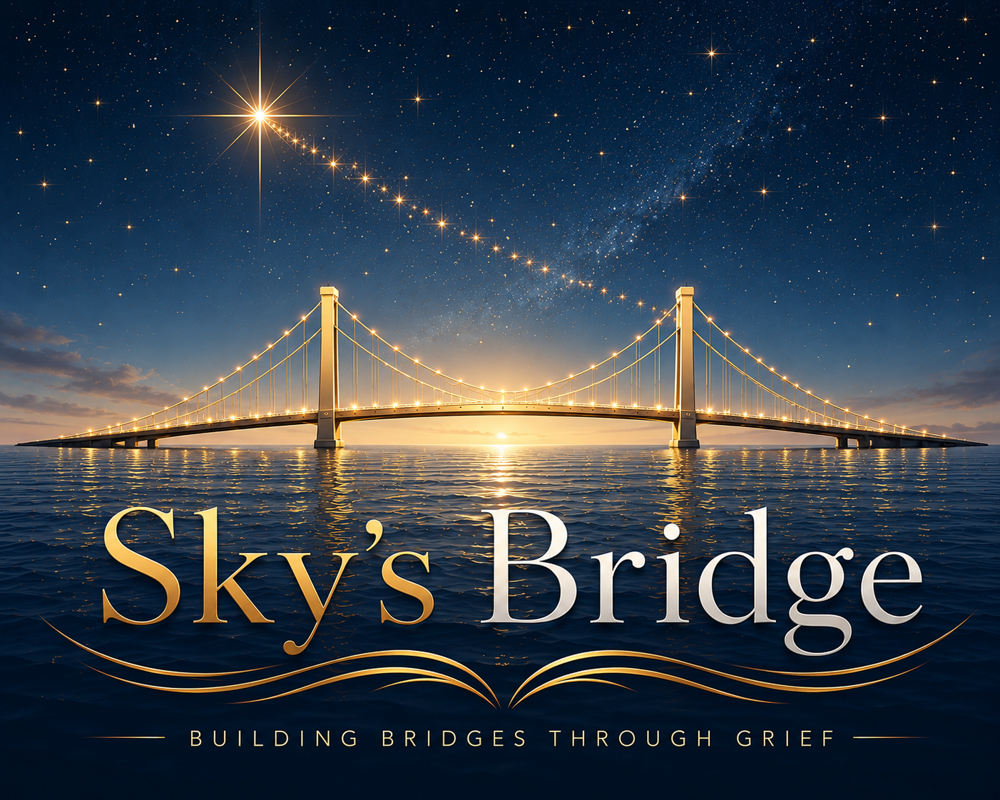

Safe & Private
Choose what you share and where you share it. Privacy and emotional safety come first.

A gentle place for love, memory and connection
A private and compassionate community for parents and families living with pregnancy and infant loss.
Building bridges through grief
Sky's Bridge brings grieving parents and families together in a calm, protected space. Share only what feels right, connect with people who understand, and remember your child in your own way.
Choose what you share and where you share it. Privacy and emotional safety come first.
Meet people who understand grief without asking you to explain or minimise it.
Create a lasting, respectful place for your child's name, story and memory.
Find guidance, organisations and practical support for the days when grief feels overwhelming.
Remembering Sky
Sky's Bridge began with one child, one family and one enduring love. Sky's light became the beginning of a place where other families can feel seen, heard and less alone.
This community is built with tenderness, dignity and the belief that every child matters.
“Grief changes shape, but love remains.”
Choose your space
Small spaces for parents with similar experiences, timelines or needs.
Open conversations, remembrance and gentle connection across the wider community.
A permanent place of honour for names, memories and stories shared with consent.
Resources
A space with care
Join when you are ready. Read quietly, share gently, or simply remember.